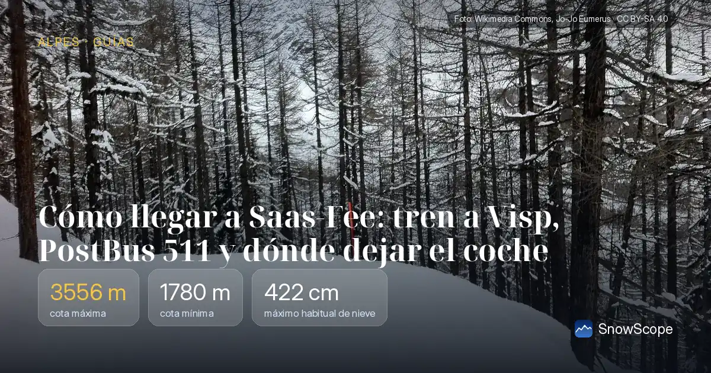

Cómo llegar a Saas-Fee: tren a Visp, PostBus 511 y dónde dejar el coche
Saas Fee es una estación sin coches a 1 780 m rodeada de 13 cimas por encima de los 4 000 m, flanqueada por cuatro puertos de montaña que marcan cómo llegas. Ya vengas en tren y autobús o en tu propio coche, el último tramo siempre es a pie o en el autobús lanzadera gratuito del pueblo una vez que llegas al fondo del valle.
Consulta la previsión de nieve en tiempo real de Saas Fee en la app SnowScopeEspesor de nieve, alertas de nieve polvo y mapa 3D, gratis.
Tren y autobús: la ruta más rápida desde la mayoría de aeropuertos
Desde los aeropuertos de Zúrich, Ginebra, Basilea y Milán, los trenes bajan hasta Visp en el valle del Ródano. Este viaje tarda aproximadamente dos horas y media desde Zúrich. En la estación de Visp, la línea PostBus 511 sale cada 30 minutos hacia el sur por el valle de Saas y sube hasta Saas Fee. Todo el viaje desde un aeropuerto importante dura aproximadamente tres horas.
Los Ferrocarriles Federales Suizos venden billetes Supersaver con descuento si reservas con antelación. Una vez que llegas a la terminal de autobús de Saas Fee, el pueblo es lo bastante pequeño para caminar, y los autobuses de esquí que suben hasta los remontes son gratuitos para todos los pasajeros.
Conducir: cuatro puertos, una carretera de valle
Si conduces, cuatro rutas llevan a Visp y luego hacia el sur a Saas Fee. Desde el norte vía Berna, el tren de coches Lötschberg transporta vehículos a través de la montaña, con trenes que salen hasta seis veces por hora en cada dirección. Desde el este, el puerto de Furka ofrece una ruta de carretera abierta. Desde el sur e Italia, el puerto de Simplon conecta con el valle del Ródano. Desde el oeste, la carretera de valle corre junto al Ródano a través de Lausana y baja hasta Visp.
Al sur de Visp, sigue las señales hacia Saas-Almagell. En la rotonda de Killerhof cerca de Stalden, toma la segunda salida hacia Saas Fee. En Saas-Grund, gira a la derecha después de la iglesia y sube por el valle de Saas. La carretera se estrecha mientras serpentea hacia arriba.

Aparcar en la entrada, luego viajar gratis dentro
Ningún coche privado entra en Saas Fee propiamente dicho. Grandes aparcamientos están en la entrada del pueblo. La oficina de turismo publica información detallada de aparcamiento y actualizaciones sobre cualquier cierre temporal por nieve u obras. Los canales de noticias locales también publican alertas sobre el acceso.
Una vez aparcado, utiliza los autobuses locales gratuitos y las lanzaderas de esquí. Estos incluyen paradas en el remonte Alpin Express, la estación de autobús, el aparcamiento de varios pisos y el aparcamiento norte. Durante la pretemporada (31 de octubre al 18 de diciembre de 2026), y de nuevo del 19 de diciembre de 2026 al 18 de abril de 2027, los autobuses eléctricos también conectan pueblos cercanos como Saas-Grund y Saas-Almagell directamente a Saas Fee. Otros autobuses del valle requieren pago a menos que tengas una SaastalCard.
Lo que dicen los números: un invierno largo y profundo
En 46 inviernos pasados, Saas Fee a media montaña (2 668 m) ha tenido un pico medio de temporada de 178 cm, con nieve en el suelo aproximadamente 260 días cada invierno. La nieve más profunda suele caer en marzo. En la base (1 780 m) las cifras son menores: un pico típico de 92 cm y 228 días de nieve, con más nieve a menudo en febrero.
Las elevaciones más altas, alrededor de 3 556 m, cuentan una historia diferente. Allí la profundidad máxima mediana alcanza 422 cm, y la nieve suele llegar a finales de septiembre e insiste hasta principios de julio. Esta ventaja de altura es por qué la estación mantiene la nieve más tiempo hasta la primavera y principios de verano.
Retrasos por mal tiempo: planifica tu tiempo de viaje con cuidado
Los puertos de Lötschberg, Furka y Simplon pueden cerrarse con nevadas fuertes o riesgo de avalancha. Si conduces, deja tiempo para los retrasos y comprueba el estado de las carreteras antes de salir y de nuevo antes de bajar. Lo mismo aplica a PostBus 511: las tormentas de invierno pueden ralentizar el viaje, así que permite tiempo extra y llena el depósito o carga la batería.
Las leyes de neumáticos de invierno se aplican en los cuatro puertos y los accesos. Comprueba la clasificación de tu neumático y la profundidad del dibujo antes de salir, especialmente si alquilas un coche. El valle y el pueblo en sí normalmente son accesibles, pero la limpieza de nieve es una tarea constante a esta altitud.
Mejor momento para llegar y qué traer
Noviembre es temporada temprana; la nieve en la base aún se está acumulando (inviernos pasados muestran un típico de 13 cm a mediados de noviembre). La media montaña y las laderas superiores mantienen más, pero las condiciones pueden ser escasas y variables. Para diciembre la base suele tener 35 cm, y las laderas superiores 150 cm, haciendo la estación más fiable. De enero a marzo ofrecen la nieve más profunda y estable.
Ya viajes en tren o en coche, lleva capas de abrigo, protección solar y una botella de agua. Si conduces, empaca provisiones para el día: combustible, agua y snacks. El viaje no es largo, pero el tiempo de montaña cambia rápido y puedes retrasarte.
Consejos para esquiadores
- ¿Viajas en tren? Compra tu billete hasta Saas Fee en el sitio web de SBB y sube al PostBus 511 directamente en la estación de Visp sin cambiar de andén.
- ¿Conduces el tren de coches Lötschberg en invierno? Comprueba los tiempos de espera y reserva una plaza con antelación en el sitio web de BLS para evitar retrasos.
- Deja tu coche en los aparcamientos de entrada durante toda tu estancia. Los autobuses gratuitos dentro del pueblo y hasta los remontes hacen que un segundo viaje a la ciudad sea innecesario y te ahorran dinero en aparcamiento.
- Los neumáticos de invierno son obligatorios en los cuatro puertos de montaña de noviembre a abril. Si alquilas, confirma que tu coche tiene neumáticos de invierno clasificados 3PMSF en las cuatro ruedas o lleva cadenas y calcetines de nieve.
- Tours fuera de pista y en glaciar: consulta el último boletín de avalanchas SLF en slf.ch y siempre contrata un guía de montaña cualificado.
Sobre estas cifras
Los espesores de nieve de las estaciones son la nieve más profunda en las pistas altas en la fecha indicada; son estimaciones para una zona, no una medida en un punto. Las previsiones pueden cambiar. Consulta siempre el boletín oficial de aludes antes de salir fuera de pista.
Boletines oficiales de aludes: WSL-SLF
Citar este informe
Para investigación, docencia o prensa: cifras y gráficos reutilizables libremente bajo CC BY 4.0 con esta cita.
SnowScope (2026), Cómo llegar a Saas-Fee: tren a Visp, PostBus 511 y dónde dejar el coche, https://snowscope.app/blog/es/2026/11/how-to-get-to-saas-fee-train-postbus-car-free.html, consultado el 2026-11-09
SnowScope (Atlas Labs). (2026, November 9). Cómo llegar a Saas-Fee: tren a Visp, PostBus 511 y dónde dejar el coche. SnowScope snow reports. https://snowscope.app/blog/es/2026/11/how-to-get-to-saas-fee-train-postbus-car-free.html
BibTeX
@misc{snowscope2026howtogettosaasfeetrainpo,
author = {{SnowScope (Atlas Labs)}},
title = {Cómo llegar a Saas-Fee: tren a Visp, PostBus 511 y dónde dejar el coche},
year = {2026},
month = nov,
howpublished = {\url{https://snowscope.app/blog/es/2026/11/how-to-get-to-saas-fee-train-postbus-car-free.html}},
note = {Published 2026-11-09 14:31 UTC; accessed 2026-11-09}
}· CC BY 4.0 · Métodos, datos y herramientas →
Saas Fee: nieve y temperatura según la altura, este invierno vs el pasado (herramientas) →
Sigue Saas Fee
Gratis: un aviso cuando llega la nieve y la previsión cada mañana.
Más partes de nieve

Cuándo reservar Courchevel y las 3 Vallées, qué pueblo elegir y dónde dura la nieve, a partir de 46 inviernos pasados.

Cortina d'Ampezzo de tres maneras: Tofana, Faloria-Cristallo y Cinque Torri-Lagazuoi, con 46 inviernos de datos de nieve a tres alturas.